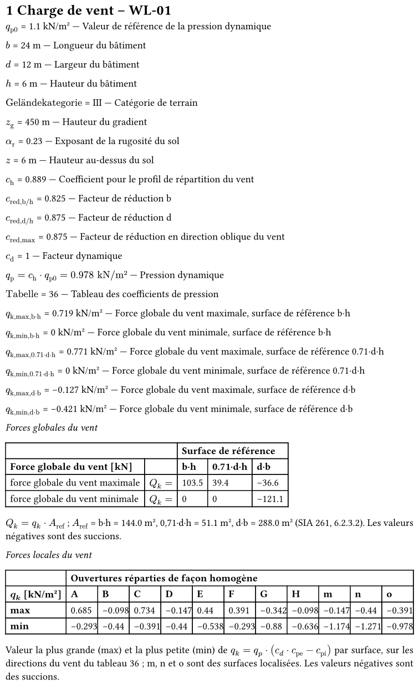
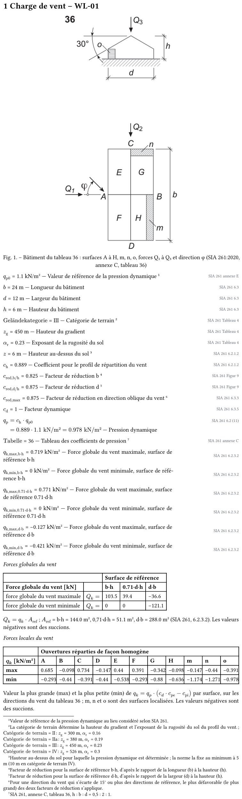

Le prototype du vent avec votre revue de la quatrième version, le 23.10.2026. Un modèle ou un Résultat 3D ouvert dans une fenêtre en prend toute la largeur et suit la fenêtre quand on la redimensionne. Le détail par φ est toujours affiché. Le tableau des forces locales du fichier est transposé : large et bas. Les quatre artefacts précédents restent tels quels.
qp au point le plus haut, constant sur la hauteur (6.2.2.3) : z = h par défaut ; ch = 1,6·[(z/zg)αr + 0,375]² avec z au moins 5 m (10 m en catégorie IV) et le profil de la catégorie III au-dessus de 30 m en catégorie IV (6.2.1.2).
Forces globales (15) : Qk = cred·cd·cf·qp·Aref. cred de la figure 9 pour b·h et d·h, chacun pour les directions à moins de 15° de la sienne, le plus défavorable des deux pour les autres (6.3.3), 1,0 pour la toiture (6.3.2). Q1 agit sur la façade A (b·h), Q2 sur la façade C (d·h), Q3 verticalement (d·b), comme le dessine la figure 22. Le facteur des en-têtes (0,71·d·h…) fait partie de Aref.
Pressions : qek = cpe·qp (13), qik = cpi·qp (14), et pour la force sur une surface Qek = cd·qek·Aref (17), Qik = qik·Aref (18) : la pression nette sur une paroi est donc qk = qp·(cd·cpe − cpi), pression positive vers la surface, succion négative (6.2.2.5, figure 7). cred ne s'y applique pas (6.3.1). Une valeur ±0,1 compte ses deux signes.
Un écart avec Woodcore aujourd'hui : wind_source.local_pressures calcule qp·(cpe − cpi) sans cd. C'est le même nombre tant que cd = 1,0 (bâtiments jusqu'à 15 m, 6.3.5) ; dès qu'un cd différent est saisi, (17) demande cd·cpe. Le prototype applique (17) ; c'est une correction à faire dans le calcul.
Surfaces localisées m, n, o (figure 22) : « Surfaces soumises à une sollicitation locale élevée. Les forces agissant sur elles ne doivent pas être superposées aux forces agissant sur les grandes surfaces. » ĉpe sert aux pressions de courte durée sur les zones sensibles (vitres, tuiles et leur fixation). Le prototype les montre à part.
Les dessins. Six bâtiments sont dessinés par Woodcore dans ce prototype, chacun relevé sur la figure de son tableau : 31, 32, 36, 40, 59a et 59b. m, n et o n'ont pas la même place d'un tableau à l'autre (au tableau 36, n est sur G le long de C et m le long de B côté H ; au tableau 40, m longe A côté E). Pour les 31 autres, l'onglet montre la figure de la norme elle-même ; leur dessin est un relevé à faire tableau par tableau.
Le même modèle sert à trois endroits. Le bâtiment avec la figure de la norme n'est plus qu'en section 2 et dans le module Bâtiment.
| Où | Ce qu'il montre | Les commandes |
|---|---|---|
| Section 2 et module Bâtiment | Le bâtiment du tableau : A à H, m, n, o, b, d, h (he à l'égout pour deux pans), α, Q₁ à Q₃ en noir, la direction φ en bleu. Une surface survolée s'allume à travers le bâtiment. | Glisser pour tourner ; molette, − et + pour zoomer, « Ajuster » ; Face A, Face C, Iso, Dessus ; le curseur de φ. |
| Section 3, sous le tableau des forces globales | Qk,1, Qk,2, Qk,3 dans leur direction, avec leur valeur en kN. Rouge : la force pousse sur la face. Bleu : elle s'en éloigne (succion). Une force nulle reste en gris. | Un bouton par φ du tableau et « Max, toutes directions » ; max (+) ou min (−) ; épingler, fenêtre. |
| Section 4, à la fin | Les faces vues, neutres. Sur chacune, sa charge qk : un plan rouge tenu par des flèches qui poussent sur la face, ou un plan bleu tenu par des flèches qui s'en éloignent. La valeur en kN/m² est au plan ; elle se déplace, avec un trait, quand elle couvrirait une lettre ou une autre valeur. | Un bouton par φ et « Max, toutes directions » ; pression max (+) ou succion max (−) ; épingler, fenêtre. |
Ce que le zoom et la rotation font maintenant :
Dans Woodcore. Un module Python sans Qt (wind_model3d.py) projette le bâtiment et rend le SVG. Un widget Qt le redessine quand on glisse ou qu'on zoome : environ 350 lignes de QPainter, sans nouvelle dépendance. Le rapport n'imprime pas le 3D (votre décision) : il imprime la figure de la norme.
Le modèle 3D existe pour les six bâtiments déjà relevés (tableaux 31, 32, 36, 40, 59a et 59b). Les autres montrent la figure de la norme. Vous avez décidé que les 37 seraient dessinés avant la mise en service.
Les tableaux Murs, Toiture et Surfaces localisées sont partis du centre. Le volet droit les garde, avec leurs survols et leur sur-évidence des cpe et cpi. Le détail par φ donne le reste.
Comme pour la neige (version 4) :
Variable-loads/Wind/WL-01.typ, écrit par le générateur de Woodcore 0.122, avec vos décisions appliquées. L'aperçu le compile élément par élément (environ 1 300 rendus réels) et montre en pâle ce qui est masqué ;#include domain-file("wind-load", "WL-01").Il y a deux nouveautés par rapport à la neige :


Lu dans le fichier que le générateur de Woodcore 0.122 écrit pour ce cas, avant les corrections du prototype.
Les forces globales ne s'impriment pas. Dans le tableau, les cellules contiennent le nom des variables, « qk_max_cf1 », et non leurs valeurs. C'est un défaut du générateur. Le prototype y écrit les nombres.
Une force s'imprime comme une charge par m². Le générateur écrit qk en kN/m², avec le libellé « Force globale du vent ». La fenêtre montre Qk = qk · Aref en kN : une force est Q, majuscule, en kN ; une charge par surface est q, minuscule, en kN/m². Le prototype garde les lignes qk par m² et imprime le tableau en Qk, kN, comme vous l'avez décidé.
Tous les cas d'ouvertures. Le tableau des forces locales a six groupes de colonnes : extérieur, réparti, ouverture A à D. Selon votre décision, le fichier ne garde que le cas choisi dans l'onglet.
De l'allemand dans le fichier français. Les symboles « Geländekategorie » et « Tabelle » ; les clauses « Anhang E », « Anhang C », « Figur 9 ».
cd manque toujours dans les pressions locales. wind_source.local_pressures(table, qp) calcule qp · (cpe − cpi) sans cd. (17) le demande dès que cd ≠ 1,0. Le prototype l'applique.
Les revues des quatrième et troisième versions (23.10.2026) d'abord, puis celles de la deuxième et de la première (22.10.2026).
| Sujet | Décision |
|---|---|
| Version 4 → fenêtre d'un 3D | Le dessin prend la largeur de la fenêtre et la suit ; ce qui est écrit dessous aussi. |
| Détail par φ | Toujours affiché, le bouton retiré. |
| Forces locales dans le fichier | Le tableau transposé, large et bas. |
| Version 3 → zoom | Molette ou − / + : du bâtiment au quart de la largeur jusqu'à cinq fois la largeur, toujours centré. La rotation ne change plus l'échelle. |
| Faces cachées | Une face qui disparaît d'une vue n'est plus dessinée, ni sa lettre, ni les surfaces posées dessus. Une force ou φ dans l'axe de la vue non plus. |
| Surfaces localisées | m, n, o posées contre leur face, plus au-dessus. |
| φ | Un curseur fait tourner la flèche φ autour du bâtiment. |
| Couleurs des résultats | Pression en rouge, succion en bleu, la valeur de la même couleur, jamais écrite sur la flèche. |
| Charges de surface | Les faces neutres ; des charges surfaciques comme dans RFEM, rouges ou bleues, avec leur valeur. |
| Section 4 | Sans le bâtiment ; le détail par φ ouvert sous les coefficients de pression, puis les ouvertures, puis le Résultat 3D ; sans les tableaux Murs, Toiture et Surfaces localisées. |
| Q1 · la figure dans le rapport | Une figure se règle partout pareil. Elle n'apparaît qu'au niveau 3. C'est la figure de la norme, en 2D, pas le 3D. |
| Q2 et Q3 · le 3D dans le rapport | Les Résultats 3D restent dans la fenêtre ; le rapport n'imprime pas de 3D. |
| Q4 · les forces globales dans le fichier | Option 1 : le tableau en Qk [kN] comme la fenêtre, les lignes qk par m² gardées. |
| Q5 · le survol de b·h, d·h, d·b | Option 1 : il allume la surface de référence sur le bâtiment, au centre comme dans le module Bâtiment, et rien d'autre. |
| Version 2 → modèle 3D | Seulement le modèle à la souris ; les vues fixes et « pression par φ » retirées. Rien ne se sélectionne quand on tourne. |
| Surface survolée | Allumée et visible à travers le bâtiment. |
| Résultats 3D | Forces globales en section 3, charges de surface en section 4, chacun avec ses angles, « Max » et le signe ; épinglables et en fenêtre. |
| Couleur de survol | Le jaune safran, mal lisible, remplacé par un bleu, en clair comme en sombre. |
| Sur-évidence | Une ligne du volet droit allume le cpe et le cpi qui l'ont donnée, encadrés en orange, par-dessus la colonne cpi des ouvertures choisies. |
| Version 1 → standards de la neige | Le vent les reprend tous :
|
| Module Bâtiment | Deux vues : la figure de la norme, ou le modèle 3D. Au-dessus de l'image : le tableau, son titre, h : b : d et la toiture. Plus de ĉpe, de cfr, ni des étiquettes « Q₁ sur A (b·h)… ». |
| Survols liés |
|
| Volet droit |
|
| Section 4 |
|
| Mode Affichage | Comme la neige. |
| 1. Carte 261.sia.ch | https://261.sia.ch/?lang=fr&layer=wind, lang=de si la fenêtre est en allemand ou en anglais. |
| 2. Ouvertures à l'export | Tranché ici selon votre règle (le fichier ne contient que ce qui calcule ce que la fenêtre affiche) : seul le cas choisi. |
| 3. Les 31 bâtiments non dessinés | Tous dessinés avant la mise en service. |
| 4. Le tableau en couleurs | Au survol du i, épinglable ; et les deux tableaux de coefficients sont désormais colorés eux-mêmes. |
| 5. Proportions h : b : d | Message orange au-delà d'un facteur 1,5, le calcul se fait. |
| 6. Le bâtiment dans le rapport | Au niveau 3 seulement, la figure de la norme (revue de la version 3). |
| Issues | #95 : les onglets construits à partir d'une base paramétrée. #96 : le second clic qui désépingle. |
L'option recommandée est la première.
| Quoi | Où | Coût, ce qu'il faut décider |
|---|---|---|
| Le bâtiment de chaque tableau, dessiné | une table de géométrie par tableau à côté de calc/norms/sia261-2020-tabNN-wind.json, et wind_svg.py (Qt-free) | 37 relevés : la forme du toit, la place de A à H, de m, n, o, des flèches. Le dessin ne change pas avec les dimensions saisies, comme vous l'avez demandé. |
| cd dans les pressions locales | wind_source.local_pressures | Petite correction, avec un test à cd ≠ 1. |
| Le choix des ouvertures | schemas/wind-source 1.2 : un champ « ouvertures » (rép., A, B, C, D) | Nouveau contrat de données. Aujourd'hui l'export donne tous les cas côte à côte ; il ne donnerait plus que le cas choisi, ou les deux. |
| qk par surface et par φ | wind_source rend la ligne φ et le cpe, cpi qui donnent chaque extrême | Pour que la fenêtre et le rapport disent d'où vient chaque nombre. |
| Les extraits de la norme et 261.sia.ch | comme pour la neige : page et rectangle par édition dans calc/norms/ | Relevés ici pour 17 clauses et figures du chapitre 6, la figure 22, l'annexe E et les 37 tableaux, en FR et DE. |
| Volet de modules, fenêtres, bulles | le composant commun proposé pour la neige | Écrit une fois pour les deux onglets. |
| Le modèle 3D du bâtiment | calc/domains/wind_svg.py, sans Qt : une vue d'un modèle par tableau, en SVG | Le même code pour la fenêtre (propositions 2 et 3) et pour la figure du rapport. Le modèle suit la géométrie relevée de chaque tableau. |
| Le fichier du cas | unfold._generate_load et wind_source | Les valeurs dans le tableau des forces globales, Qk en kN (question 3), seul le cas d'ouvertures choisi, la figure en tête, et les mots allemands traduits. |
| Les survols liés | la brique commune de l'onglet (issue #95) | Une surface, une force, une surface de référence, les coefficients d'un qk : chaque genre s'allume avec les siens, et rien d'autre. |
Ce chantier passe par big-feature : un schéma, deux modules de calcul et l'onglet changent.